Un trayecto ameno hasta el corazón del Delta
El viaje hasta Riumar fue un trayecto ameno de poco más de una hora, de esos desplazamientos que ya forman parte de la cena: conversación, expectación y, según se acercaba el destino, ese paisaje llano y luminoso que solo tiene el Delta de l'Ebre, con el arroz a un lado de la carretera y el mar al otro.
Al bajar, Sergi Piñol y su equipo ya esperaban en la puerta para dar la bienvenida. Un breve refrigerio sirvió para romper el hielo entre los asistentes: en total, unos 35 comensales entre socios, invitados y ponentes, mezclados desde el primer minuto en una sala que, con sus fotografías en blanco y negro del Delta y su decoración de ramas y linternas, ya avisaba de por dónde iría la noche.
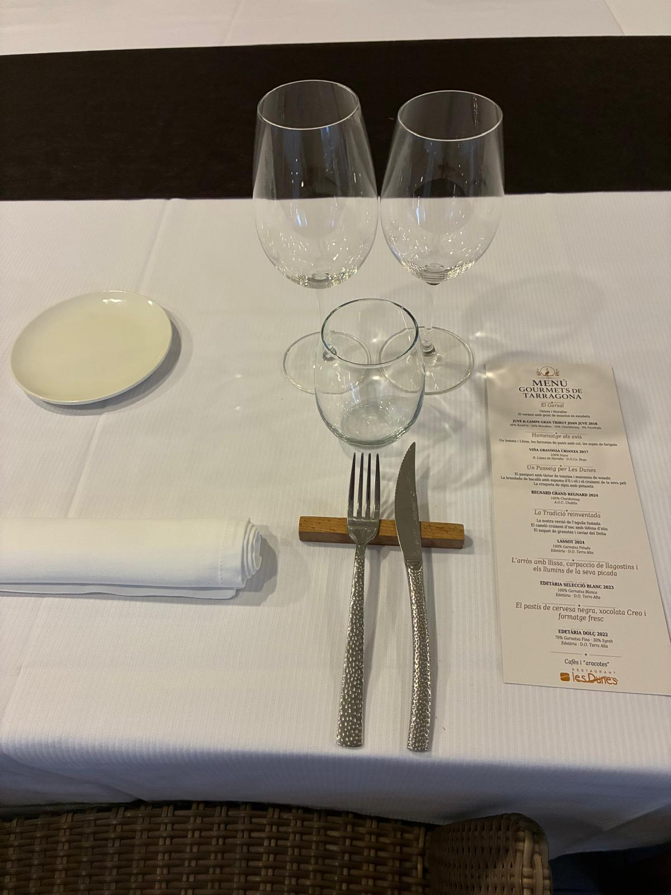
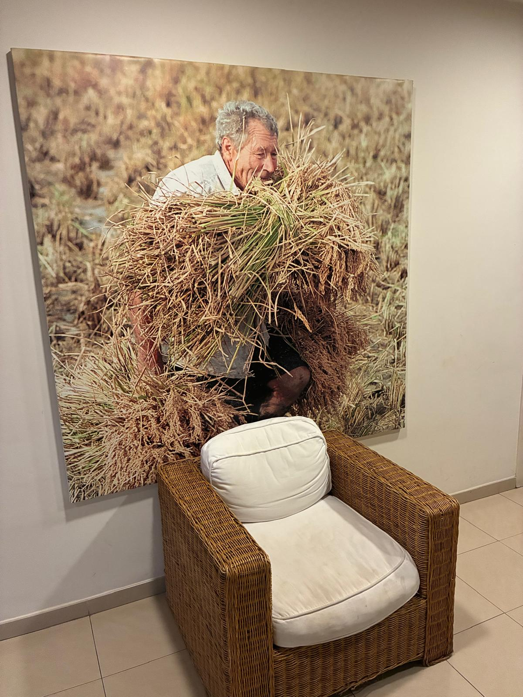
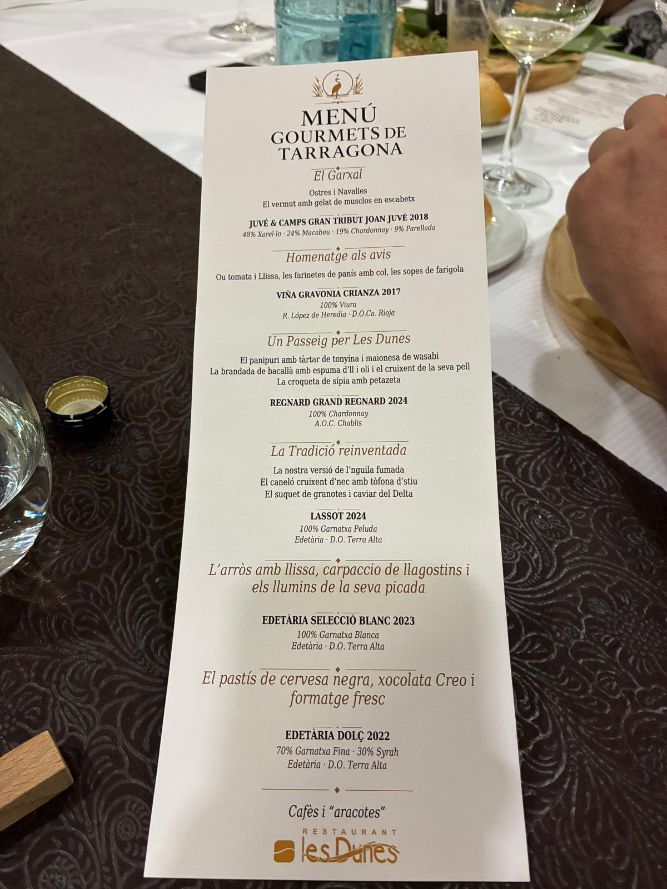
De la radio a los fogones, y un alcalde que sabe de qué habla
Arrancaron los parlamentos con Juan Manuel Yarritu, presidente de los Gourmets de Tarragona, presentando el restaurante con un breve repaso a su trayectoria. Después dio la palabra a Sergi, que relató —con la sencillez de quien no necesita adornar la historia— cómo pasó de la radio a la restauración, y cómo tomó las riendas de la casa casi sin conocer el oficio. No hay escuela de hostelería en ese relato: hay oficio aprendido a base de servicio, y esa noche se notó en cada detalle.
Yarritu presentó después al ponente invitado de la noche: el Sr. Lluís Soler, alcalde de Deltebre, que ofreció un discurso ameno en el que —como no podía ser de otra manera— elogió el territorio y su gastronomía. A media velada, se le hizo entrega del Trofeo Gastronia de manos de su propio autor, el joyero Joan Blázquez, que explicó brevemente a la sala el significado de la figura. Un inciso más, y de los buenos: Emili Mateu, socio y expresidente de la asociación, regaló a todos los asistentes un ejemplar dedicado de «El romesco. Plats de romesco i romesquets de les comarques tarragonines», con la intención de poner en valor una salsa única y exclusiva del barrio del Serrallo.
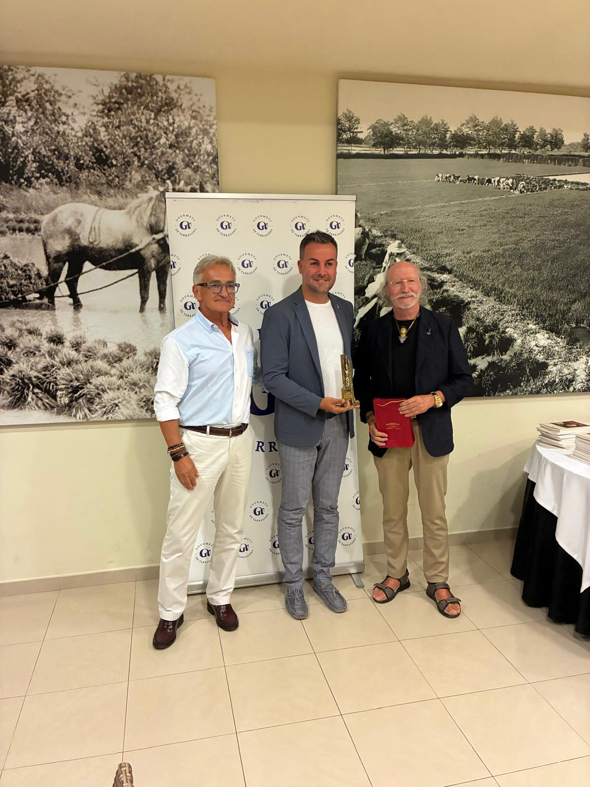
Juan Manuel Yarritu, el alcalde de Deltebre Lluís Soler y el joyero Joan Blázquez, autor del Trofeo Gastronia, tras la entrega · Les Dunes · Septiembre 2026
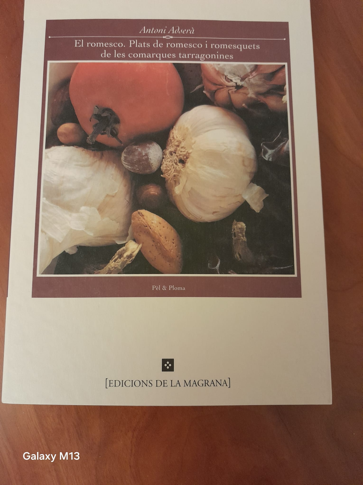
El regalo de Emili Mateu a todos los socios: un ejemplar dedicado de «El romesco», de Antoni Adserà, en homenaje a la salsa del Serrallo
La sorpresaUn adelanto de la Experiència Garxal, la mesa reservada para seis
Para sorpresa de todos, Sergi levantó a los comensales de la mesa antes incluso de que se sentaran de verdad, para enseñarles, a modo de ejemplo, el rincón donde realiza el pase de su menú más exclusivo: la «Experiència Garxal», una mesa reservada solo para seis comensales, cuidadosamente estudiada, en la que se proyectan imágenes, vídeo y música durante todo el pase. No fue el menú que vivimos esa noche —éramos 35 en la mesa larga—, pero sí un buen adelanto de cómo se siente: la proyección de olas rompiendo bajo los platos convertía la mesa en algo parecido a comer sobre el mar. Nos quedó la sensación de que debe de ser una experiencia magnífica de principio a fin.
Y en esa misma mesa, aprovechó para servir los primeros bocados: las ostras, las navajas y un sorprendente vermut con helado de mejillones en escabeche que resumía en un solo bocado el carácter de la casa: territorio, técnica y un punto de humor culinario que no todo el mundo se atreve a servir. Fue, sin discusión, el arranque de la noche que todos recordarán.
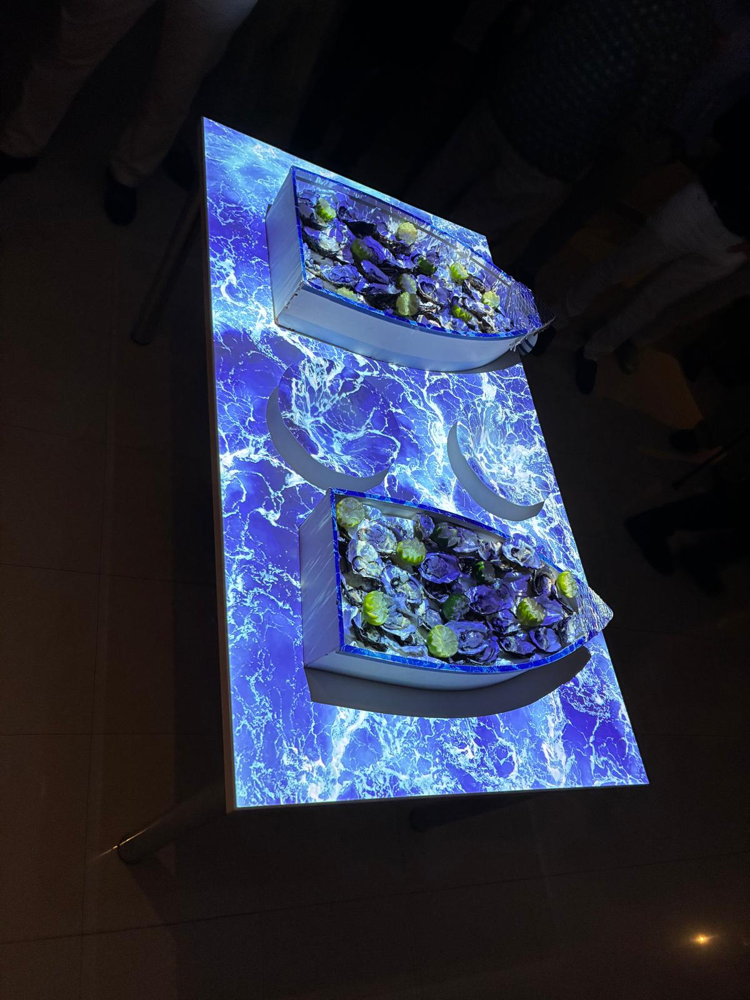
La mesa de la «Experiència Garxal»: ostras servidas sobre una proyección de olas del Mediterráneo, el primer golpe de efecto de la noche
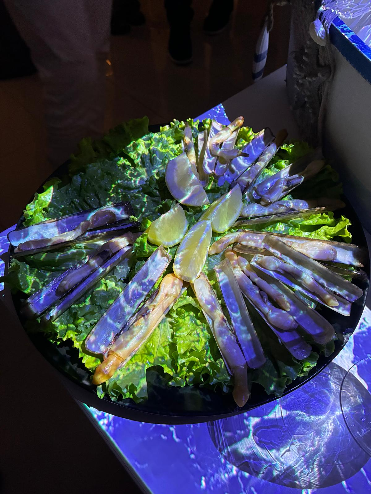
Navajas frescas con un golpe de lima — sencillez y producto, sin artificios
Primer paseHomenatge als avis: el plato que explica de dónde viene la casa
De vuelta a la mesa larga, empezó el pase de «Homenatge als avis»: ou tomata i llissa, con farinetes de panís y col, y unas sopes de farigola servidas aparte, en un vasito, como quien sirve un caldo de la memoria. Sergi salió a explicar cada elaboración con la misma sencillez con la que había contado su historia, y la sumiller de la casa estuvo exquisita en la explicación de los maridajes: no una clase magistral, sino una conversación de las que hacen que la sala escuche en silencio.
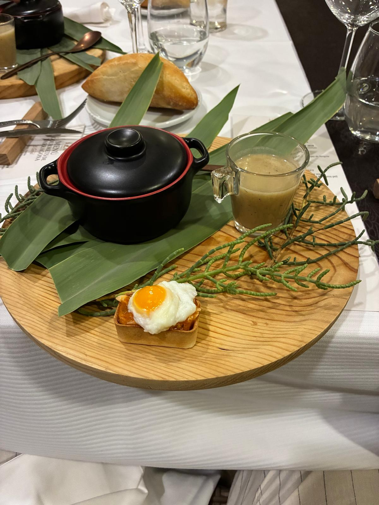
Ou tomata i llissa, con farinetes de panís i col y sopes de farigola — un plato que sabe a memoria familiar, con la Viña Gravonia como maridaje
Segundo paseUn passeig per Les Dunes: tres bocados, tres argumentos
El ritmo siguió firme con «Un passeig per Les Dunes»: el panipuri con tártar de atún y mayonesa de wasabi, la brandada de bacalao con espuma de ajo y aceite y el crujiente de su propia piel, y la croqueta de sepia con petazeta. Tres bocados pequeños y muy distintos entre sí —crujiente, cremoso, marino— que funcionaban mejor juntos que por separado, como tres frases de la misma idea.
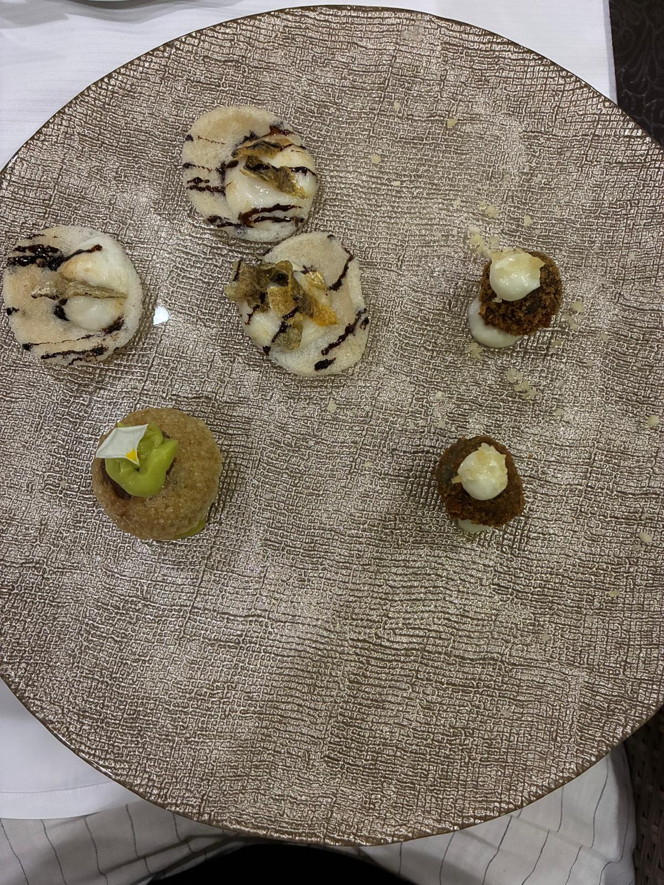
El panipuri de atún y wasabi, la brandada de bacalao y la croqueta de sepia con petazeta — tres bocados que resumen el estilo de la casa, con el Chablis de Régnard como maridaje
Tercer paseLa tradició reinventada: tres formas de mirar al Delta desde otro ángulo
El pase que da nombre a la sección fue, probablemente, el más ambicioso de la noche: la versión propia de la anguila fumada, el caneló crujiente de pato con tòfona d'estiu y el suquet de ranas y caviar del Delta. Tres platos de raíz muy local —la anguila, el pato, las ranas del arrozal— pasados por un tamiz de técnica contemporánea sin perder ni un ápice de su origen. Es exactamente lo que promete el nombre del pase, y lo cumple.
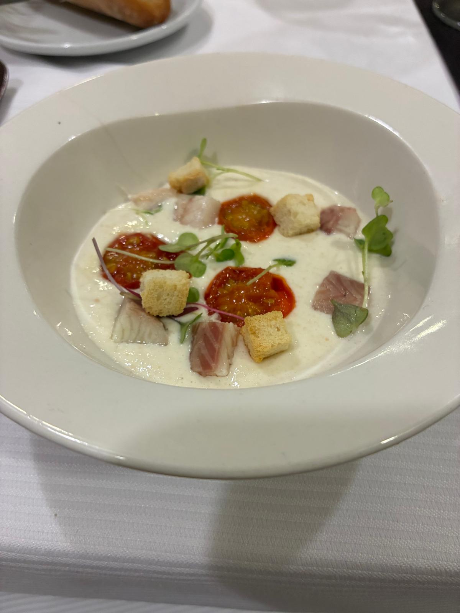
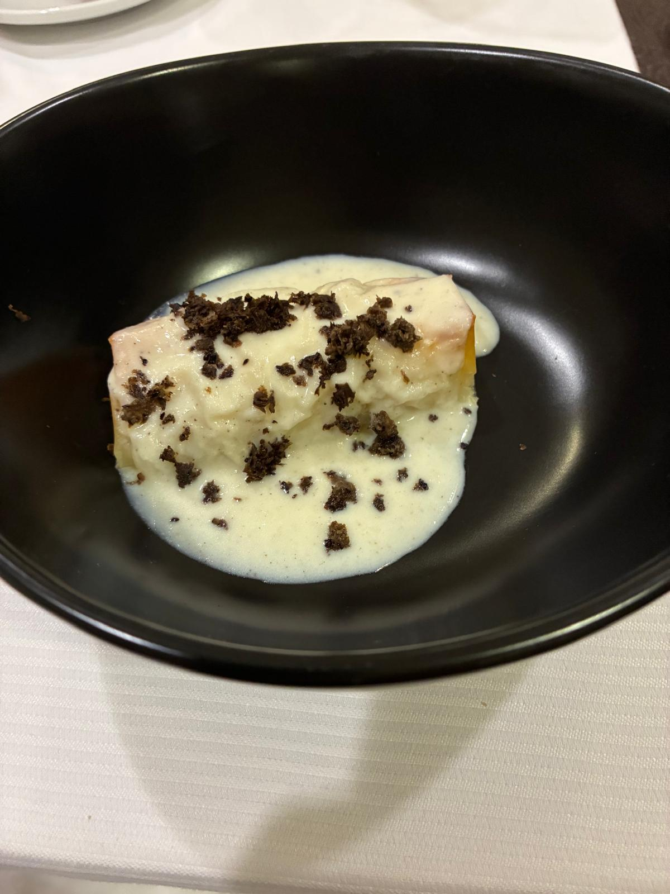
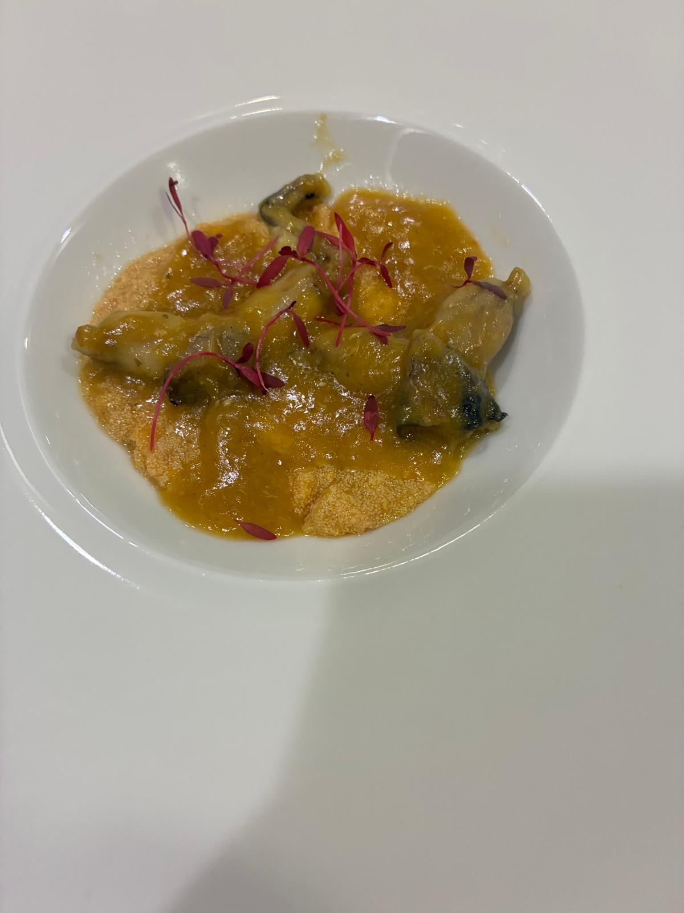
El arroz con llisa que llegó entre chispas y se quedó en la memoria
El arròs amb llissa, carpaccio de llagostins i els llumins de la seva picada fue, sin discusión posible, el plato de la noche. Llegó a la mesa entre pequeñas llamas —esos «llumins» que dan nombre al plato y que no son solo un efecto: son la picada encendida, literalmente, delante de los comensales—. Sorprendió tanto por la puesta en escena como por la materia prima: el arroz meloso, con el punto justo de caldo, y la llisa asada encima, con la piel crujiente y la carne jugosa. No es fácil que un arroz se convierta en el titular de una cena con seis pases; este lo consiguió.
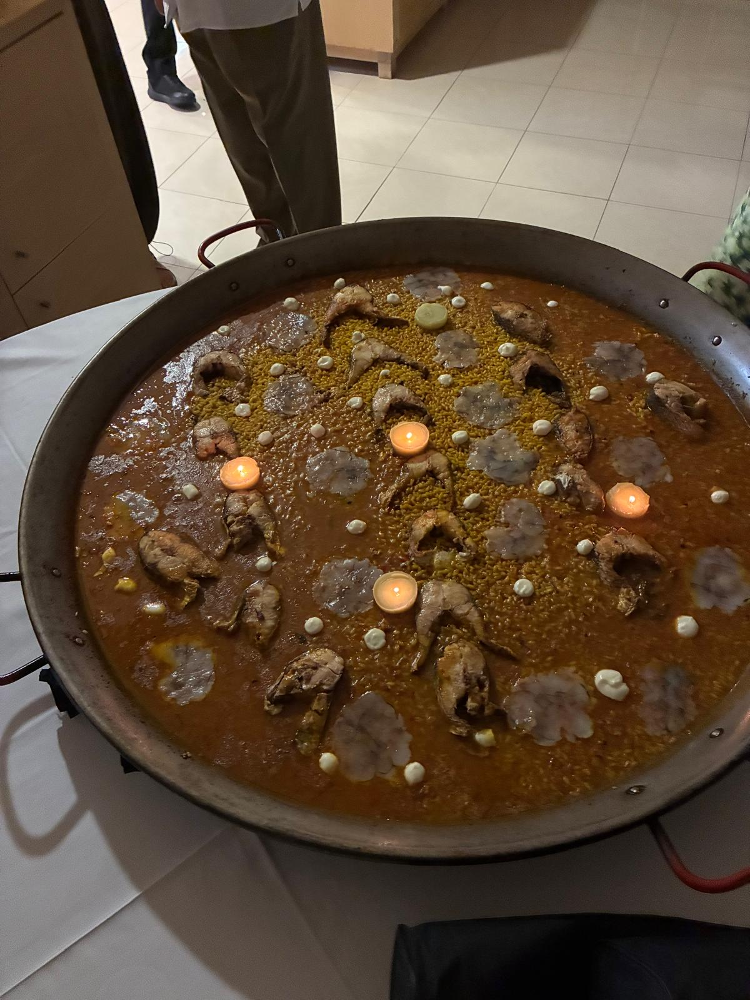
Els llumins encendiendo la picada sobre el arroz, en directo, delante de la mesa — el momento de mayor aplauso de la noche
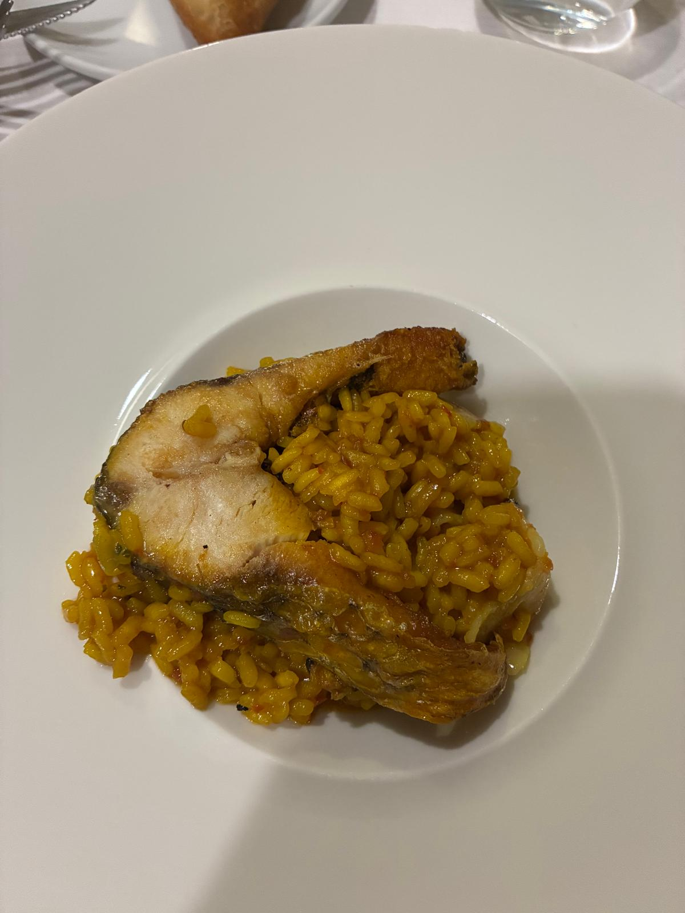
El arroz ya en el plato: meloso, con la llisa asada y el carpaccio de langostinos, maridado con el Edetària Selecció Blanc
El cierrePastís de cervesa negra: un final sin estridencias
El pastís de cervesa negra, xocolata Creo i formatge fresc cerró el recorrido de platos con la elegancia justa: nada de golpes de efecto después de un plato tan protagonista como el arroz, sino un postre que sabe estar en su sitio. Chocolate intenso pero no empalagoso, el toque amargo de la cerveza negra y la frescura del queso fresco equilibrando el conjunto. El Edetària Dolç 2022 lo acompañó con la dulzura justa, sin competir.
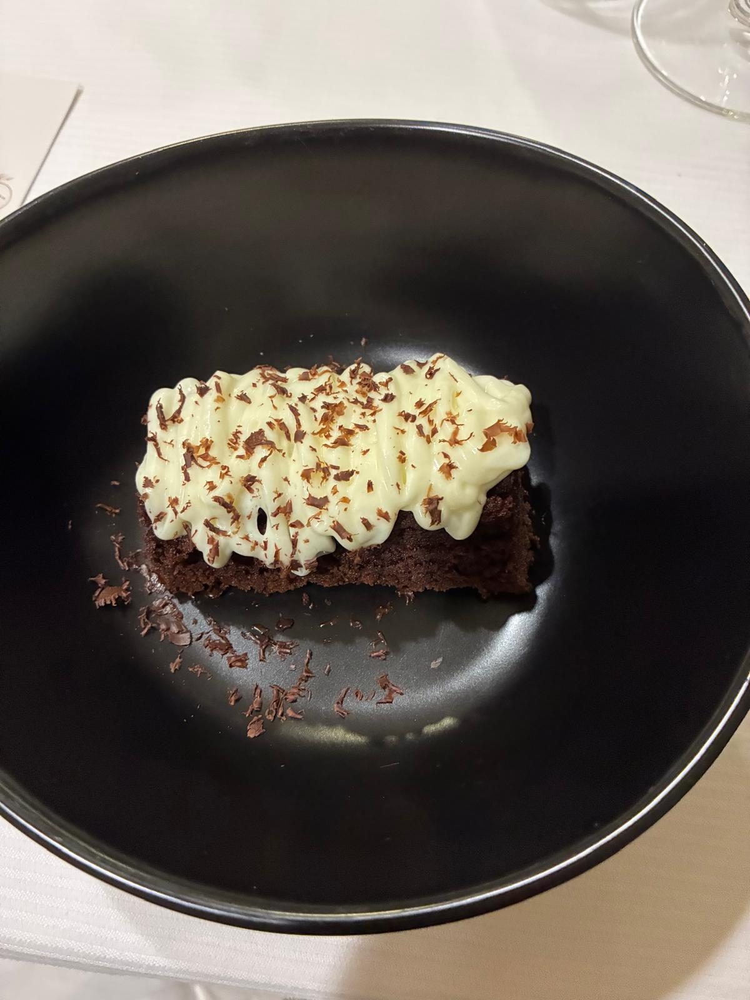
Pastís de cervesa negra, xocolata Creo i formatge fresc — un cierre sin estridencias, con el Edetària Dolç como último maridaje
Un recorrido cuidado, sin la comodidad de lo obvio
La selección de vinos fue excelente, cuidada y muy acertada: referencias de distintas regiones que sorprendieron a la sala, plato a plato.
El Garxal · Corpinnat
Juvé & Camps Gran Tribut Joan Juvé 2018
Xarel·lo, Macabeu, Chardonnay i Parellada
Homenatge als avis · D.O.Ca. Rioja
Viña Gravonia Crianza 2017
100% Viura · R. López de Heredia
Un Passeig per Les Dunes · A.O.C. Chablis
Grand Régnard 2024
100% Chardonnay · Régnard
La Tradició reinventada · D.O. Terra Alta
Lassot 2024
100% Garnatxa Peluda · Edetària
Arròs amb llissa ★ · D.O. Terra Alta
Edetària Selecció Blanc 2023
100% Garnatxa Blanca · Edetària
Postre · D.O. Terra Alta
Edetària Dolç 2022
Garnatxa Fina i Syrah · Edetària
Paracotes, y un videoclip que resume a Sergi mejor que cualquier crónica
A la hora de los cafés, la casa obsequió a los comensales con unos paracotes, el dulce frito y azucarado típico de la zona, un punto extra y muy acertado para cerrar la cena. Y como colofón, Sergi volvió a proyectar sobre la mesa de la Experiència Garxal su propio videoclip con la canción «Fills del fang», dada su afición por la música. Un cierre inesperado y personal, muy en línea con una noche en la que la casa no dejó de sorprender ni un solo pase.
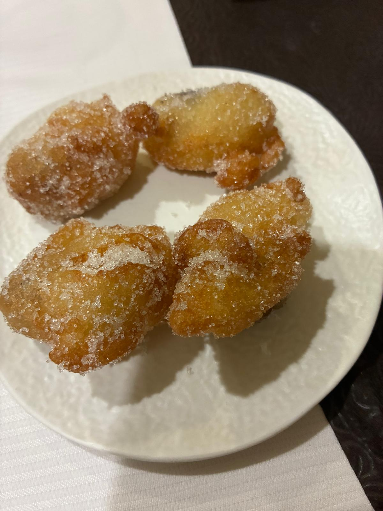
Los paracotes que acompañaron al café — un guiño dulce a la repostería tradicional del Delta
La noche en sala«Puede vender hielo en la Antártida»
Fue una noche sorprendente y destacable de principio a fin. Sergi sabe lo que hace, y no hace falta que haya pasado por la academia: tiene ese don de convicción y de contar historias que hace que cualquier plato suene mejor de lo que ya es —de esos que, como se comentó entre risas en la sobremesa, te venderían hielo en la Antártida—. El equipo de sala respondió a la altura, y la bodega de la casa, visible tras un cristal en la entrada, ya avisaba de que aquí el vino se toma en serio.
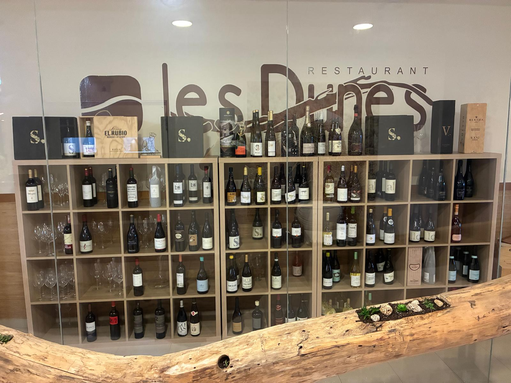
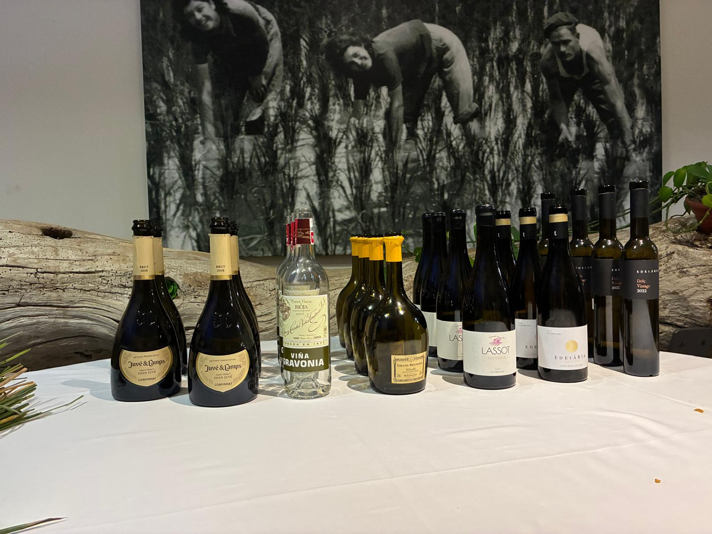
El diploma de los Gourmets, y una foto de familia
Al cierre de la velada, los Gourmets de Tarragona hicieron entrega del diploma recordatorio al restaurante, recogido por Sergi, Noemi y todo el equipo de cocina y sala frente a las fotografías del Delta que decoran la casa. Un cierre sencillo y agradecido, coherente con una noche en la que la hospitalidad nunca dejó de estar presente. La velada terminó como debía: con una foto de grupo, todos juntos, socios, invitados, ponentes y el equipo de la casa.
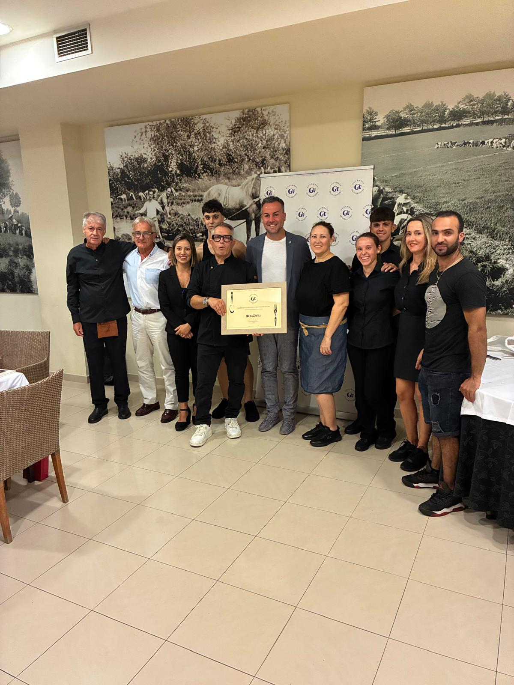
Sergi, Noemi y todo el equipo de cocina y sala de Les Dunes, con el diploma de los Gourmets de Tarragona · Septiembre 2026
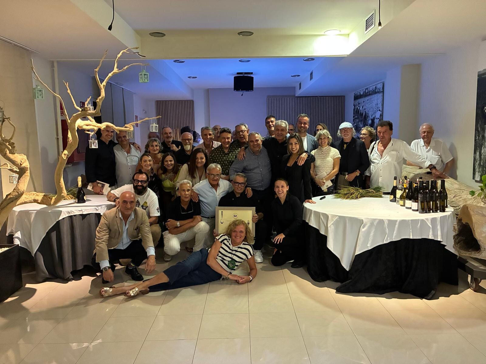
La foto de familia con la que se cerró la noche: socios, invitados y ponentes, todos juntos, en Les Dunes
Nuestra miradaA dos visitas de saber quién gana la temporada
Les Dunes tiene algo que no se enseña en ninguna escuela: un chef que conecta con la sala como pocos, y que ha construido una casa a su imagen, con la «Experiència Garxal» como declaración de intenciones. El menú funcionó como recorrido completo, con el arròs amb llissa como plato indiscutible de la noche y «La Tradició reinventada» como el pase de mayor ambición técnica. El maridaje, cuidado y variado, estuvo a la altura en los seis pases, y el servicio de sala —con la sumiller como protagonista discreta— sostuvo una noche larga sin fisuras.
Al terminar, los socios votaron como en cada visita. Con esta, los Gourmets de Tarragona están ya a dos visitas de cerrar la temporada y conocer al mejor restaurante de 2026. Les Dunes ha puesto el listón muy alto para lo que queda por delante.
Newsletter
¿Quieres recibir la próxima crónica antes que nadie?
Crónicas de los restaurantes visitados, vinos recomendados y novedades del Camp de Tarragona. Una vez al mes, sin ruido.
Sin spam · Baja cuando quieras.